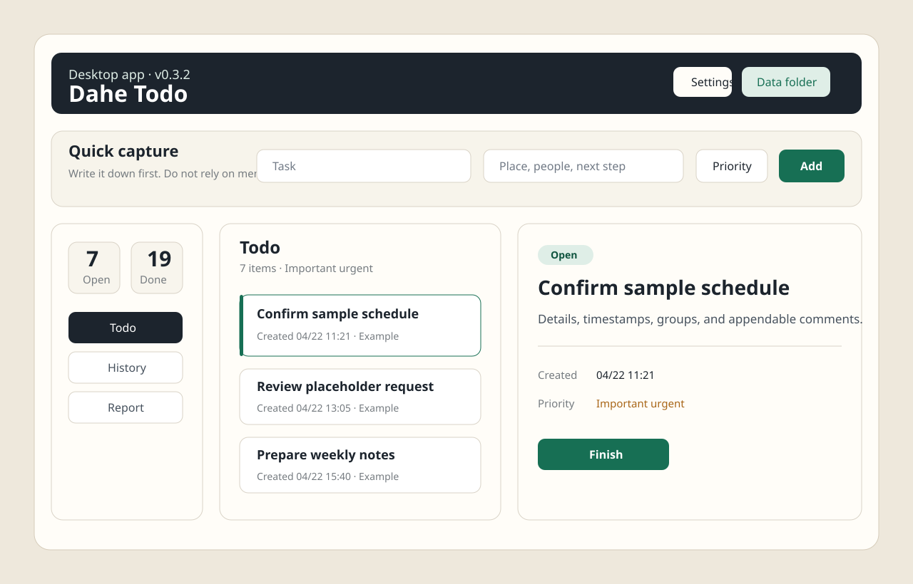

Task-bound Pomodoro
Start focus on the selected task and track completed sessions, interruptions, total minutes, and today's effort.
Local first · Quick capture · Pomodoro · Weekly achievements
Dahe Todo is a Windows desktop todo app for busy office work: capture sudden tasks, run task-bound focus sessions, add completion notes, review by week, and turn the trail into weekly-report material.

v0.5.0 Highlights
Start focus on the selected task and track completed sessions, interruptions, total minutes, and today's effort.
Unlock weekly badges such as First Step, Steady Rhythm, Closed Loop, and Report Ready.
Generate weekly material with completed tasks, comments, focus time, interruption count, and unlocked achievements.
Capability Matrix
Quickly enter task title, note, group, and priority before the thought disappears.
Use priority quadrants and focus sessions; urgent inserted work can be converted into a todo.
Keep creation time, completion time, comments, focus history, and interruption history.
Browse history by week/month, copy report material, and see weekly achievements.
Data and Privacy
The desktop app stores data under %USERPROFILE%\Documents\DaheTodo by default. Tasks, focus sessions, and achievements live in separate JSON files.
The repository includes privacy checks and a pre-push hook to prevent local task data, installers, caches, and tool folders from being committed.
Release
Current version: v0.5.0-achievements
Developers
cd desktop
npm.cmd run check
npm.cmd run dist